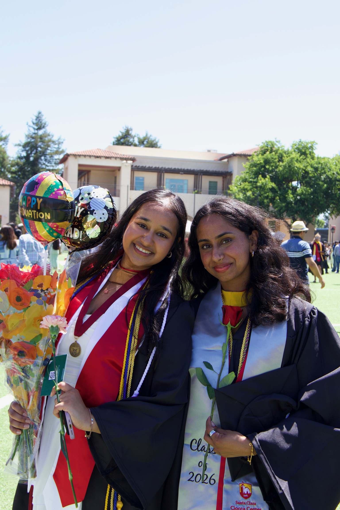

I am an Sc.M. student in Cybersecurity at Brown University, and a recent Computer Science graduate from Santa Clara University, where I concentrated in cybersecurity and minored in economics and mathematics.
I'm interested in digital privacy, machine learning, human-centered computing: and the sociotechnical questions that sit at their intersection. As an undergraduate, I conducted research on password security under Dr. Shiva Houshmand, digital safety and privacy policies with Dr. Kai Lukoff, IoT Research with Dr. Navid Shaghaghi, and usability research under Dr. Faisal Aqlan through the NSF's REU Program at the University of Louisville.
I'm always happy to talk research! More of my projects can be found on the research page.
life updates
